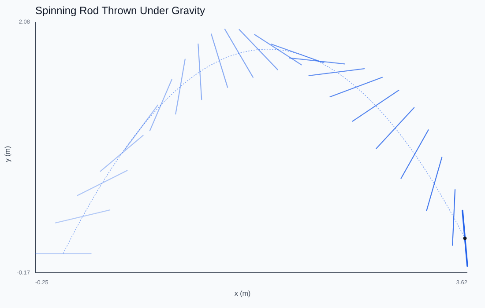
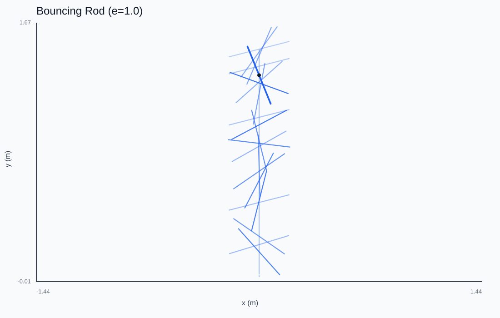
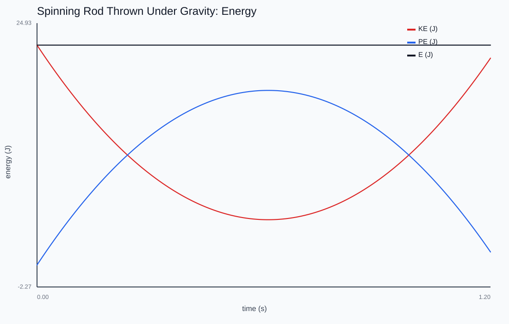

2D Rigid Body
A force applied off-center accelerates the center of mass and spins the body at once. What decides how much of a hit becomes rotation?
Drop the rod, or click anywhere to throw a fresh one. An off-center wall hit converts translation into spin through the (r×n) term — watch the spin readout jump on each glancing bounce.

Extent changes everything
A rod has a moment of inertia I = ¹⁄₁₂ mL². Gravity acts at the center of mass and so produces no torque — meaning the COM follows a parabola and the spin rate is exactly constant in free flight. Linear and angular motion are independent until something touches a wall.

Where spin comes from
A wall impulse at offset r from the COM changes velocity by j n / m and angular velocity by j (r×n)/I. That r×n term is the whole story: a hit straight through the COM imparts no spin; the further off-center, the more of the impulse becomes rotation. It is the rotational analogue of reduced mass.

Honest energy
Two deliberate choices keep energy clean: no positional push-out (which would inject mg·depth of potential energy per contact) and one endpoint resolved at a time (a flat rod hitting on both ends at once picks up a spurious one-step spin). With e=1, total energy stays flat across many bounces — proof the resolver isn't cheating.
This chapter is drawn from the physics-lab study notes and renders. The longer write-ups and project essays live on the blog.